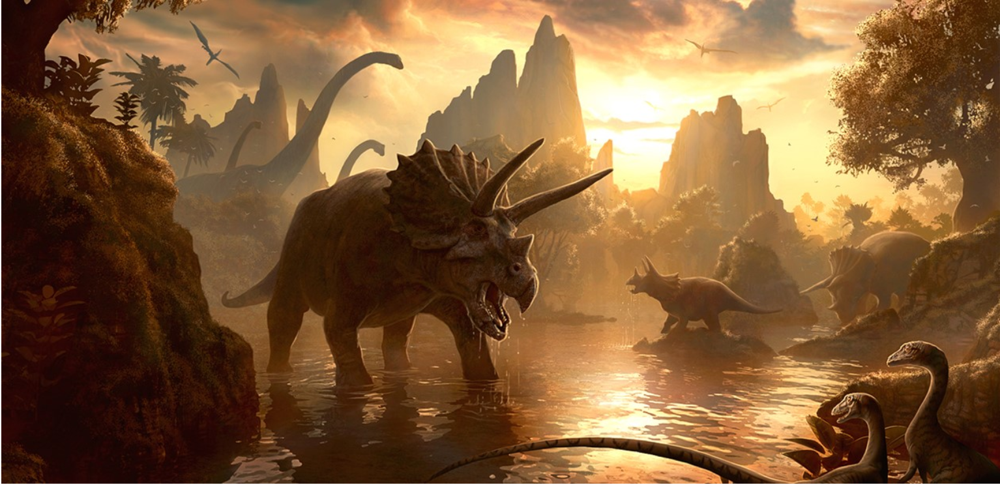
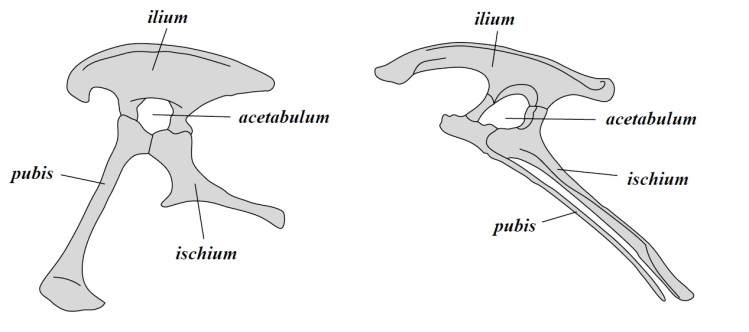

Theropod Encyclopedia is a documentation of Theropods, which are more commonly reffered to as meat eating dinosaurs. We break down and analyse every single family, every single clade of Theropoda and provide abundant information about them. Watch as we take you step by step into the great history of the Theropods.
So, why choose Theropod Encyclopedia?
Why can't I just use other sites or sources? The answer: you cannot get all of this perfectly assorted information organised in chapters anywhere else in the net. Only a little prior knowledge is needed before using this site.
Click one of the buttons on the right if you want to jump to a chapter. Let's get started!
Dinosaurs were a diverse group of reptiles under the clade (any kind of taxonomical level) Dinosauria. They are a type of prehistoric diapsid (an animal with two jaw muscle openings in its skull) which lived in the Mesozoic Era (230 mya to 65 mya), nicknamed the “Age of Dinosaurs”. It was split into three periods: the Triassic, Jurassic, and the Cretaceous. The term Dinosaur means “Terrible lizard”. It was coined by Richard Owen. But however, dinosaurs are quite different from lizards in many ways, for example, dinosaurs all have pillar like legs which stick straight out from their body whereas lizards have legs which stick out from their side.

Paleontologists are still debating whether dinosaurs were warm or cold blooded. During the first half of the 20th century, dinosaurs were portrayed as and thought to be sluggish and cold-blooded reptiles. Certain dinosaurs like most Dromaeosaurs(raptors) were very active predators and hence, most likely could not have been cold blooded. This proof was stated when John Ostrom, one of the paleontologists that started the Dinosaur Renaissance, discovered the Dromaeosaur Deinonychus, meaning “Terrible Claw”. Dinosaurs may have had their own ways of regulating body temperature as well, for example Spinosaurus and Amargasaurus, which both had a sail running down their vertebrae.
The dinosaurs are split into two main branches, called orders, based on their hip structure: Saurischia and Ornithischia. This classification was made by Harry Seely. They mean ‘Lizard hipped’ and ‘Bird hipped’ dinosaurs respectively. Surprisingly, Saurischian dinosaurs are more related to birds than Ornithischian dinosaurs!

These are the hips of a Saurischian(left) and an Ornithischian(right). There are two bones in each, the ischium and the pubis. In Saurischian dinosaurs, or Saurischians, the two bones point in different directions, that is, the pubis points downward and front. In Ornithischian dinosaurs, or Ornithiscians, they point in the same direction, that is, the pubis points downward and backward.
Theropoda falls under Saurischia.
Copyright Theropod Encyclopedia, 2019 (Images from Internet)